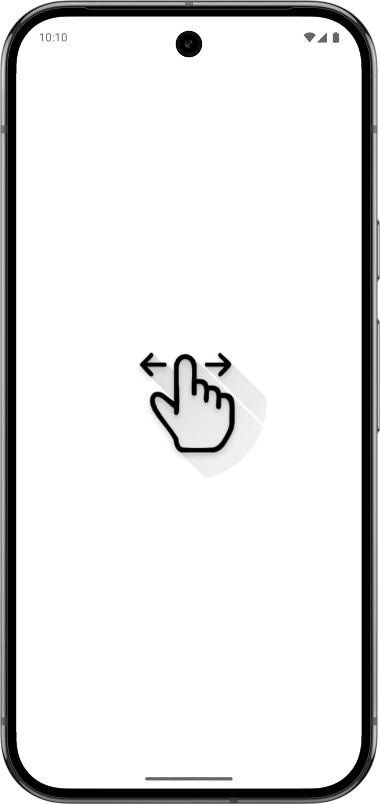

Magic Number - Mobile Application
A mind-reading card trick reimagined as a Flutter app: swipe six cards, shake the phone, and watch it reveal the number you were only ever thinking of.
Dart
Flutter
A mind-reading card trick reimagined as a Flutter app: swipe six cards, shake the phone, and watch it reveal the number you were only ever thinking of.
Magic Number is a Flutter implementation of a classic mentalist card trick. The player picks any number from 1 to 63 and keeps it secret. The app deals a shuffled stack of six cards, one at a time, and for each of them the player swipes up if the number appears on it, or down if it does not.
When the last card is gone, shaking the phone makes the answer fade in from nothing — the number the player was only ever thinking of.
The trick works because each card encodes one bit of the binary representation of the number: adding up the values of the cards the player confirmed reconstructs it exactly.
The cards are scattered with a small random rotation and offset so the stack looks hand-dealt, with shadows for depth. A first card explains the rules and fades away on the first touch, and a floating button reshuffles the deck for the next round.

A small, self-contained Flutter app: one screen drives the shuffled deck, the swipe interactions and the shake detection through the phone's motion sensor.
Implements the whole game as a single StatefulWidget: the shuffle-and-deal logic, per-card swipe handling and running-total bookkeeping, the accelerometer-driven shake accumulator that maps raw sensor magnitude to a 0–1 reveal progress, and the fade animations for the instructions card, all with plain dart:math and dart:async — no external state-management package.
Renders the scattered card stack with Stack/Positioned/ Transform.rotate, handles swipe gestures through Dismissible with custom vertical dismiss thresholds, and drives the instructions fade-out and shake-reveal opacity with AnimationController.
Streams live accelerometer events used to detect the "shake to reveal" gesture: the app sums the vector magnitude of each event, and once it clears a threshold accumulates that excess into a progress value that controls how visible the revealed number becomes.